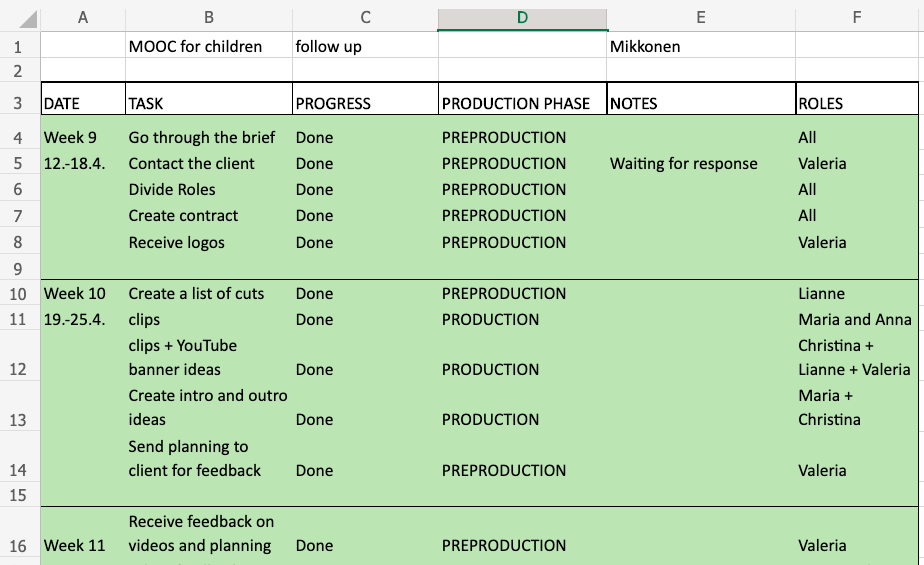

191388, Breda University of Applied Sciences
"Adapts to varied roles, jobs responsibilities, schedules and contexts and is pro-actively looking for new situations and challenges."
I have wanted to be able to take more responsibility and challenge myself with roles outside of my comfort zone. Therefore, this semester I want to try to take the role of producer and put more effort into keeping the group organised and cohesive.
"Prioritizes, plans and manages work of his own and/or the team to achieve the intended result."
Regardless of setting planning and managing as a goal for couple semesters already, I still feel like I am not doing enough for it. I am hoping that my first goal of taking more responsibility will help me with pushing myself more with this goal as well.
This goal is not straight connected to the ABIs but I wanted to still set it as the leadership goal for this semester. Especially with later this semester having supervision with first years, I want to be able to communicate with whole team and be updated on their progress and be able to help out where I can. I believe providing feedback and asking for progress will help me reach this goal.
I think you’ve been an amazing producer for our team – you definitely had a lot of responsibilities to take on in the past few months and I realize it mustn’t have been easy, especially with doing everything remote and not being able to physically participate, but you’ve been absolutely crushing it.
Perhaps what we all lack because of the pandemic is real-life experience (I mostly mean real-life communication) and that can sometimes be tough, especially if you haven’t done it in so long. So, I would say that whenever we get the chance to meet in person and be together again, you should focus on also being such a great producer in real life.
Honestly, I don’t think we’ve had a more organized and well-prepared person in our group, so you’ve been pretty great in that regard too. I admire your do-to lists that we see when you share your screen, I think you are very organized, punctual and you manage your time way better than most students. I can only learn from you.
I don’t really know what could be improved upon in your situation, perhaps the situation with the DHW edit was a bit of a mess because we all had technical/physical issues when it came to finishing that, but you also managed to find a good solution, so it was pretty much not even a problem worth mentioning.
-Maria Bogdanova (190374)
You were always taking initiative and well aware of the things that still needed to happen, you always took your responsibility and it motivating others.
Sometimes it felt like you were not really comfortable taking the lead and giving tasks to others, I completely understand this because it was an online group with people I think you haven’t done project with before in real life.
You were always very organised and always finished things on time. Some examples were the layout of the site and the layout of the marketing plan which you finished really fast and showed you took responsibility.
Sometimes you were working to fast, this is actually really positive since you always finished everything on time. But with the social media pages for example, give some tasks to other people. Once you start doing more than the others they will assume you will keep doing it and they will get demotivated to take action themselves. I don’t think this was the case during our project since everyone was motivated.
-Thijs van der Heijden (193117)
I think in the role of the producer for the latest AV project (especially the live stream) you had a lot of challenges regarding communication and location because you couldn’t be present and needed to manage everything from abroad. You did very well regarding those conditions.
The only thing I could come up with is try next time to make the responsibilities of you and everybody a little bit clearer to give everybody certainty on what they need to deliver when. Else I don’t have anything.
The latest AV project was very chaotic, but you did whatever you could. Especially for the first part (the animated video) planning was nice and trustworthy. The second part was insanely chaotic by nature but from your location you tried to help planning as much as possible especially with the floor plans and that was very helpful.
Something I can come up with is the information flow from you (as producer) to the team. It is usually good but once or twice I was lacking some information or got wrong information and therefore a bit of confusion and misunderstanding came up. To prevent that, make sure to share all needed information with your team as they are dependent on you and depend their actions on the piece of information they get.
-Christina Cordts (193808)
You did a great job! You were interested in us and our workflow. You were offering your help all the time and suggested solutions to the problems that occurred in our team. I don’t have any negative notes about how you did! I definitely think you met your PCM goal. Keep being so passionate!
-Viktoriya Beshovishka (200890)
You made sure to communicate with the team every week and asked a lot of questions on our progress. You also offered your feedback as well, which was nice. Communication went well.
-Maud Van Der Aa (203297)
I think you were able to reach this goal well. You always communicated and tried to arrange meetings on Wednesday and offered your help when needed. To improve, you could inform the team a bit earlier about the meetings, like a day or two in advance.
-Sasha Michels (202967)
The following feedback is collected from Lianne Vrancken (193350), Anna Rutwoska (192653), and Christina Cordts (193808).
You are very responsible in my opinion. When you were DOP everything to do with camera you felt responsible for and now you've been executive and producer you show huge responsibility for the entire project. You're one of the most responsible people I've come across at this studies quite frankly.
You are very easy to work with and very responsible. You were always informing us about everything and you were always showing on time. Maybe you should stop to be so serious and be more relaxed. To improve it you can start to take less on your shoulders and take more fun from the tasks.
Keep handling responsibility well, stop taking on too much only because that is the quickest.
Not a lot to say here, just that you are very loyal to your deadlines and never miss them.
You are great in it, you met all the deadlines and informed and send us everything on time in PRH. We could always rely on you. Cant think of anything to stop and start.
Keep meeting deadlines line you always do.
Yes, I do think you are very motivational. Your way of communicating and working with others is very soft and friendly and that provides a good vibe in the group. Whenever I really didn't feel like it that day your way of working actually gave me the energy to do what I needed to do so I really like having you as a teammate. Also I've never had a meeting where you didn't turn on your camera and that's pretty cool.
You should keep the group motivated to deliver everything properly and on time and you should keep motivating us to do our best. To be a better motivator is good to have a vision for something and encourage people to go with you, so maybe you can try that. Stop being so serious about school and make more fun from it.
Keep contributing to the conversation and group meetings, stop putting work on you if others are not motivated, start trying to include others in the group and trigger more active behaviour on their side.
You are an amazing and natural leader. When you first became producer you were very insecure and you asked a lot of questions but that really helped you become the confident leader you are now. You are very commited to all of your projects and give it all you got. Amazing truly.
Oh, you are a great coordinator. Everything was clear and you were always willing to help us if needed. You understood my struggles with uploading files and tried to help me. You were also dividing tasks so everyone was satisfied. You didn't put on us too much pressure but rather let us do what we think is right. If you want to coordinate teams even better you can try to have more energy with everything you do. I cannot think of anything you should stop doing.
Keep being organized and structured, stop having doubts on how to approach things (you are doing great most of the time!) start having an even better overview on the group's performance and everything that is going on in the group qua work load or work processes.
From the feedback on my professional goals, mostly I learned to be more straightforward, delegate more tasks, and be more specific and clear with the information. I think it is clear that this was my first time stepping up and taking the responsibilit of a producer. I still struggle being the leader but I think it is also fair on a school assignment. I will take this into consideration when setting up goals for next semester and work on being a better leader. It was also nice to see that my team appreciated my work even with our chaotic and complicated production house projects. Working from a distance and with complicated clients wasn't easy but I was able to pull through.
Regarding my leadership goal with my supervision group, I am a bit disappointed how the semester went. I think the fact that we had to supervise through online had a big effect on that as well. I tried to weekly reach the team and offer my help with feedback. However, the team didn't ask for feedback other than once for their finance assignment, which was already nice to feel helpful. I think by reflecting on this, I can see again that I need to step more forward and not be shy about being a leader.
Regarding the PCM indicators, it was mostly just motivational. I feel like we have been working on these indicators for so long that there is just mostly positive feedback now from it. It would be nice to switch the indicators every year or so to give some variety as well.
I already have an idea on the goals I want to set for next semester, it is just the question of connecting them to the ABIs. First of all, regarding the feedback I got, I want to work more on my leadership goal and put more effort into that as well. After doing the leadership workshop, I have a better idea of what kind of leader I want to be, and what I need to do to work towards that. For a second goal, I want to also take into consideration the workshops I completed and work on being even more open and creative with ideas. I thought that I have worked on this goal enough but I have a feeling that I can do even more for it. Next semester, I only want to focus on these two goals and keep my goals to a minimun so it would be easier to concentrate on them more.
In semester 4, I worked as the producer in my production house team. This brought me many new challenges and I went beyond my comfort zone to take the responsibility of leading the project and making sure everything is done.
From the producer's role came a lot of responsibilities, which couldn't be managed without proper planning. Therefore, I made sure to keep our project schedule always updated. I also learned to create a more detailed schedule after working on three separate projects.
